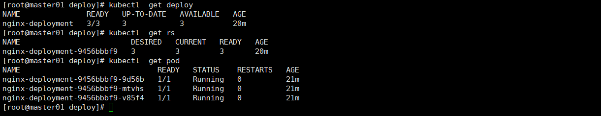
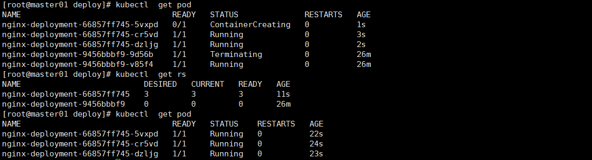

Deployment控制器
Deployment是整个Kubernetes集群中最重要的控制器，没有之一。因为在大部分集群里面跑的大部分Pod都是Deployment控制的，所以会用比较多的篇幅来介绍。
一.基本介绍
Pod 是 Kubernetes 中的基本部署单元，它定义了在一个节点上运行的容器集合。一个 Pod 中的容器共享相同的网络命名空间，可以使用 localhost 地址相互通信。然而，虽然 Pod 是部署容器的基本单位，但它们不提供跨节点的故障转移，扩展，或生命周期管理等功能。这就是为什么 Deployment 成为了一个非常重要的资源。
下面是为什么我们需要 Deployment 的一些主要原因：
- 声明式更新： Deployment 允许你声明你希望的应用状态（比如你希望运行的副本数），而无需关心如何从当前状态过渡到这个状态。你可以声明新的状态，Deployment 控制器会自动进行必要的更新。
- 自动替换和自愈： 如果一个 Pod 失败，比如因为节点故障，Deployment 会自动替换掉它，来确保你指定的副本数总是被满足。
- 可伸缩性： 你可以简单地通过更新 Deployment 配置来扩展或缩减应用。Deployment 控制器会相应地启动或终止 Pod 来满足副本数的要求。
- 版本控制和回滚： Deployment 支持应用更新的版本控制。如果更新后的应用表现不佳，你可以轻松地回滚到之前的版本。Deployment 会保持应用的更新记录，你可以随时回滚到任何之前的稳定版本。
- 更新策略： 你可以定义更新策略，比如滚动更新，保证在更新应用时不会出现停机。Deployment 确保在更新时，一定数量的旧 Pod 会保持运行，直到新 Pod 准备就绪。
- 管理复制的 Pod： 你不需要手动创建多个相同的 Pod 来达到负载均衡或高可用。Deployment 让你能够以声明的方式管理这些 Pod 集合。
总的来说，Pod 是运行你的应用的容器的集合，而 Deployment 是管理这些 Pod 的层，它提供了自动替换、伸缩、更新和回滚等高级功能。Deployment 让应用的部署和运维更加简便、安全和可靠。
二.范例
apiVersion: apps/v1
kind: Deployment
metadata:
name: nginx-deployment
labels:
app: nginx
spec:
replicas: 3 # 告诉 Kubernetes 我们需要三个副本
selector:
matchLabels:
app: nginx
template:
metadata:
labels:
app: nginx
spec:
containers:
- name: nginx
image: nginx:1.14.2 # 使用官方 Nginx 镜像的指定版本
ports:
- containerPort: 80 # Nginx 默认监听的端口
在这个示例中，我们定义了以下内容：
apiVersion：指明了我们使用的 Kubernetes API 版本。kind：指明了我们要创建的资源类型，这里是Deployment。metadata：提供了 Deployment 的元数据，比如名称和标签。spec：提供了 Deployment 的具体规格：
replicas：表明我们希望 Kubernetes 维持三个 Pod 的副本。selector：定义了如何匹配 Pod，这里我们用标签app: nginx来选择。template：定义了 Pod 的模板，其结构与单独定义 Pod 非常类似。这里指定了 Pod 如何创建，包括使用的容器镜像（nginx:1.14.2）和容器端口（80）。
要将这个 Deployment 应用到你的 Kubernetes 集群，首先需要将上述定义保存到一个文件中，比如叫做 nginx-deployment.yaml。然后，使用 kubectl 命令行工具来部署它：
kubectl apply -f nginx-deployment.yaml
执行这个命令后，Kubernetes 会创建一个名为 nginx-deployment 的 Deployment，并根据定义启动三个 Nginx Pod 的副本。这些 Pod 将会被部署在集群中的不同节点上，以提供高可用性和负载均衡。
要检查 Deployment 的状态，可以使用以下命令：
kubectl get deployments
如果你想看到每个 Pod 的状态，可以使用以下命令：
kubectl get pods
如果你想删除这个 Deployment 和它管理的所有 Pod，可以使用以下命令：
kubectl delete -f nginx-deployment.yaml
请确保你有一个运行中的 Kubernetes 集群并且 kubectl 正确配置，以便能够执行上述命令。
三.Deployment与Pod的关系

从上图中可以看到：deploy资源的名字是我们手工定义的，但是他生成了一个rs（ReplicaSet）资源，名字是在deploy的基础上，加了一个随机字符串，这个rs又创建了3个pod（也就是这个控制器了副本数量）3个pod的名字也是在rs的名字上加了一个随机字符串。
Deployment--------->ReplicaSet-------->Pod
由于ReplicaSet这个控制器，我们一般情况下不会单独创建使用，所以一般我们不会单独来介绍，但是我们需要直到他大概是怎么回事。
如果我更新这个deploy的相关配置，触发了pod的更新会发生什么呢？

从上图中我们可以看到，rs控制器由1个变成了2个，其中的旧的rs所控制的pod在逐步删除减少，直到为0，新的rs控制的pod开始创建，直到达到预期的3个。
四.配置文件详解
我们刚才定义的yaml虽然没有定义多少资源，但是生成以后会Kubernetes会给他生成一些默认资源在里面.不同的版本，里面部分资源可能略有差异。
apiVersion: v1
items:
- apiVersion: apps/v1
kind: Deployment
metadata:
annotations:
deployment.kubernetes.io/revision: "2"
kubectl.kubernetes.io/last-applied-configuration: |
{"apiVersion":"apps/v1","kind":"Deployment","metadata":{"annotations":{},"labels":{"app":"nginx"},"name":"nginx-deployment","namespace":"default"},"spec":{"replicas":3,"selector":{"matchLabels":{"app":"nginx"}},"template":{"metadata":{"labels":{"app":"nginx"}},"spec":{"containers":[{"image":"nginx:1.14.2","name":"nginx","ports":[{"containerPort":80}]}]}}}}
creationTimestamp: "2023-11-28T07:45:13Z"
generation: 2
labels:
app: nginx
name: nginx-deployment
namespace: default
resourceVersion: "13654"
uid: 5f278fa4-4f7b-4d4b-b57e-9cbcc920d6ea
spec:
progressDeadlineSeconds: 600
replicas: 3
revisionHistoryLimit: 10
selector:
matchLabels:
app: nginx
strategy:
rollingUpdate:
maxSurge: 25%
maxUnavailable: 25%
type: RollingUpdate
template:
metadata:
creationTimestamp: null
labels:
app: nginx
spec:
containers:
- image: nginx
imagePullPolicy: IfNotPresent
name: nginx
ports:
- containerPort: 80
protocol: TCP
resources: {}
terminationMessagePath: /dev/termination-log
terminationMessagePolicy: File
dnsPolicy: ClusterFirst
restartPolicy: Always
schedulerName: default-scheduler
securityContext: {}
terminationGracePeriodSeconds: 30
status:
availableReplicas: 3
conditions:
- lastTransitionTime: "2023-11-28T07:47:01Z"
lastUpdateTime: "2023-11-28T07:47:01Z"
message: Deployment has minimum availability.
reason: MinimumReplicasAvailable
status: "True"
type: Available
- lastTransitionTime: "2023-11-28T07:45:13Z"
lastUpdateTime: "2023-11-28T08:11:43Z"
message: ReplicaSet "nginx-deployment-66857ff745" has successfully progressed.
reason: NewReplicaSetAvailable
status: "True"
type: Progressing
observedGeneration: 2
readyReplicas: 3
replicas: 3
updatedReplicas: 3
kind: List
metadata:
resourceVersion: ""
selfLink: ""
这段 YAML 是 Kubernetes 中的对象列表表示，包含了一个 Deployment 对象的详细信息。我将分部分解释这段 YAML 的内容：
apiVersion: v1
items:
- apiVersion: apps/v1
apiVersion: v1：顶层字段指明了这是 Kubernetes API 的哪个版本。在这个上下文中，v1表示这是一个资源列表。items：这是一个数组，包含了列表的所有条目。在本例中，只有一个条目，即下面紧接着的 Deployment 对象。
kind: Deployment
kind: Deployment：表明这个条目是一个 Deployment 资源。
metadata:
annotations:
deployment.kubernetes.io/revision: "2"
kubectl.kubernetes.io/last-applied-configuration: |
...[配置信息省略]...
creationTimestamp: "2023-11-28T07:45:13Z"
generation: 2
labels:
app: nginx
name: nginx-deployment
namespace: default
resourceVersion: "13654"
uid: 5f278fa4-4f7b-4d4b-b57e-9cbcc920d6ea
metadata：包含关于 Deployment 的元数据。
annotations：包括一些非结构化的元数据，如 Deployment 的修订版本和最后一次应用的配置。creationTimestamp：创建时间戳。generation：反映了对象的当前 "代"，每当对象的 spec 部分被更改时，它会增加。labels：键值对，用于组织和选择资源。name：资源的名称。namespace：资源所在的命名空间（如果是default，则意味着它位于默认命名空间）。resourceVersion：资源的版本号，用于优化性能和并发。uid：资源的唯一标识符。
spec:
...[规范配置信息省略]...
spec：定义了 Deployment 的期望状态，包括副本数量、选择器、策略、模板等。progressDeadlineSeconds: 600：表示 Deployment 在被认定为失败前可以进行尝试的最长时间，单位是秒。在此设置为 600 秒。replicas: 3：指定希望的 Pod 副本数量。在这里设置为 3，这意味着 Kubernetes 将尽力确保总是有 3 个满足selector中标签条件的 Pod 在运行。revisionHistoryLimit: 10：这个字段用来指定保留旧版本的 ReplicaSets 的最大数量。这里设置为 10，表示除了当前版本的 ReplicaSet，还可以保留最多 10 个旧版本。selector：这个字段指定了如何选择 Pod。selector必须匹配template中定义的标签。matchLabels：指定了选择标签的具体条件。
app: nginx：这里表示选择所有带有app标签且值为nginx的 Pod。
strategy：定义了如何替换旧的 Pods 为新的 Pods 的策略。rollingUpdate：这里使用的是滚动更新策略。
maxSurge: 25%：在滚动更新期间，相对于replicas指定的副本数量，允许增加的最大 Pod 数量比例。这里设置为 25%，意味着可以临时增加不超过副本数 25% 的额外 Pod。maxUnavailable: 25%：在滚动更新期间，允许的最大不可用 Pod 数量的比例。这里设置为 25%，意味着在更新期间，最多有 25% 的 Pod 可以不可用。
template：这是 Pod 的模板，它定义了 Pod 的标签、容器等配置。metadata：元数据部分，主要用于定义 Pod 的标签。
labels：Pod 的标签。
app: nginx：这里设置了 Pod 的标签，app是键，nginx是值。
spec：定义了 Pod 内部的详细规格。
containers：一个包含所有容器定义的列表。
- image: nginx:1.14.2：容器使用的镜像，这里指定为nginx镜像的1.14.2版本。name: nginx：容器的名称，这里命名为nginx。ports：容器需要暴露的端口列表。
- containerPort: 80：容器将监听的端口号，这里设置为 80。
status:
availableReplicas: 3
conditions:
...[状态条件省略]...
observedGeneration: 2
readyReplicas: 3
replicas: 3
updatedReplicas: 3
status：表示 Deployment 的当前状态。
availableReplicas：当前可用的副本数。conditions：描述了 Deployment 的不同条件（如可用性、正在进行的状态）以及这些条件的当前状态。observedGeneration：表示哪个代（generation）被控制器观察并反映在状态中。readyReplicas：当前准备好的副本数。replicas：当前副本数（与 spec 中的副本数应相同）。updatedReplicas：成功更新到期望状态的副本数。
kind: List
metadata:
resourceVersion: ""
selfLink: ""
- 最后的
kind: List和metadata是顶层资源列表的结尾字段，resourceVersion和selfLink是可选的元数据字段，通常用于资源跟踪和 API 自引用。在这种情况下，它们没有被设置（或者省略了）。
总结来说，这段 YAML 描述了一个名为 "nginx-deployment" 的 Deployment 对象，它部署了名为 "nginx" 的容器，使用的镜像是 "nginx:1.14.2"，并且期望有 3 个副本。此外，这个 Deployment 的详细状态也在 status 部分中被展示。
实际上Deployment,能容纳的信息非常多，只是由于我在定义这个功能的时候，并没有定义特别多的属性（包括标签选择器，污点，亲和性和反亲和性，request&limit，健康检查等等。）
五.总结
通过以上介绍，我们基本上能够创建属于自己的业务的Deployment了，让他正常运转起来，为了让更好的运转起来，甚至和其他服务或者整个集群形成更融洽的关系，还需要深入到给更多的属性上面。